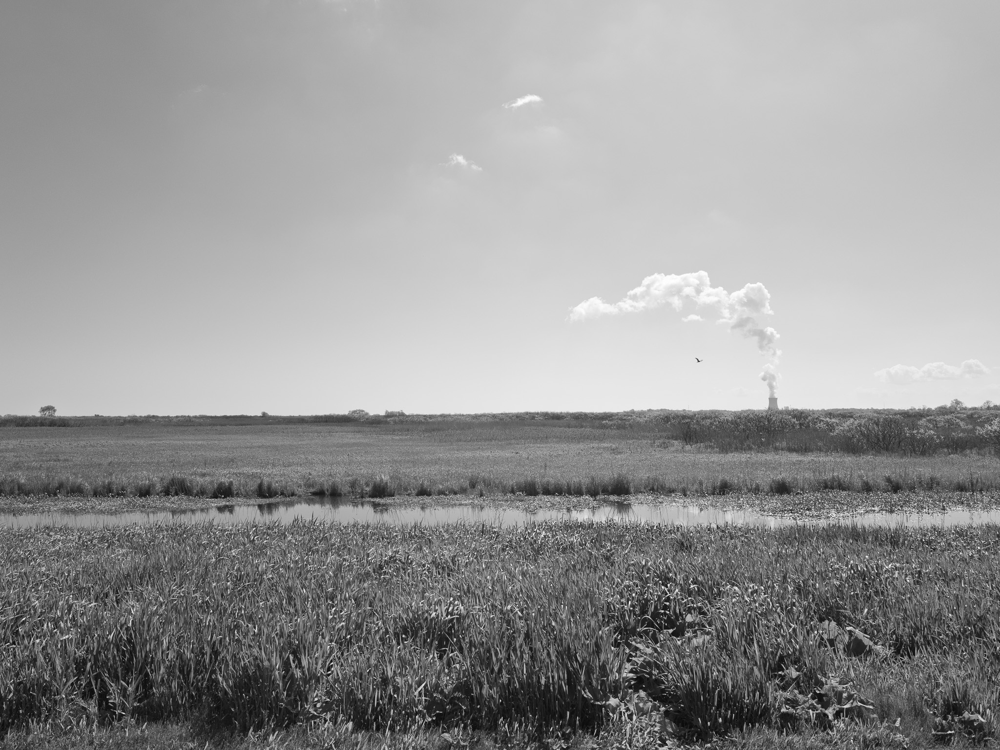
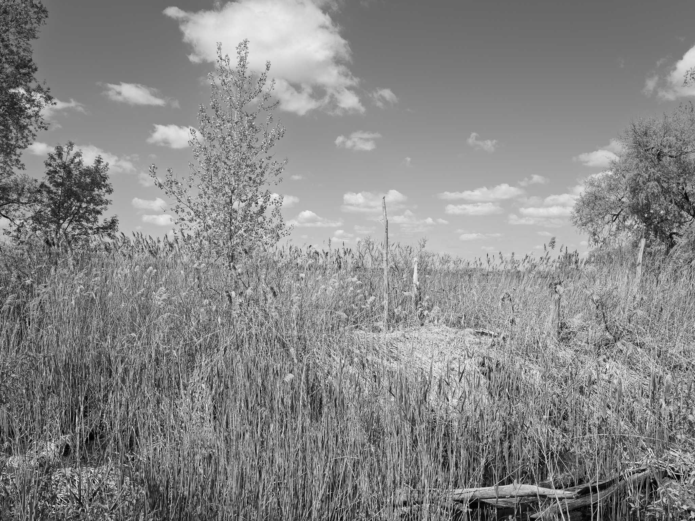
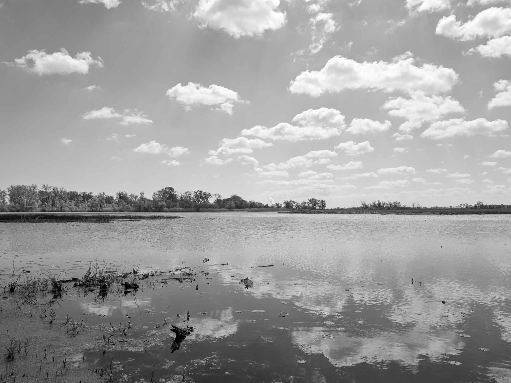
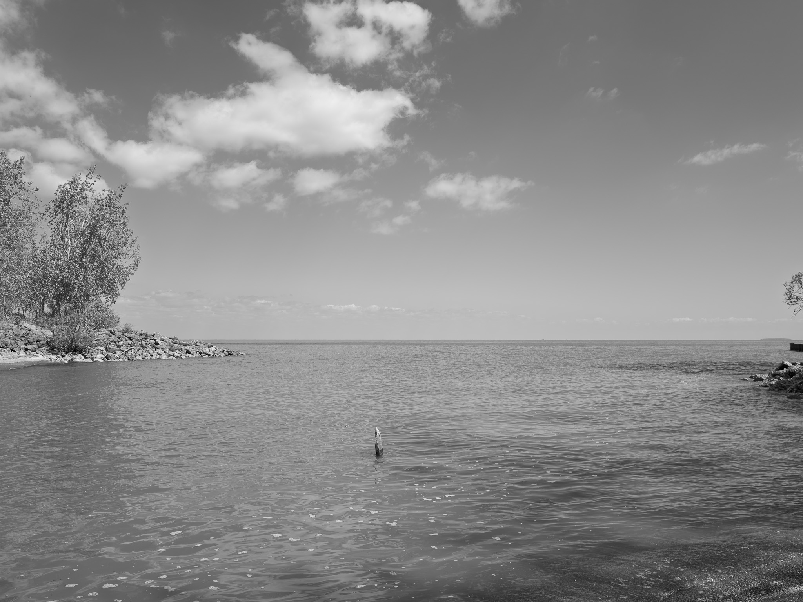

Public Lands Institute
Sites
Archive
About
Magee Marsh Wildlife Area
OH

Magee Marsh Wildlife Area 1 · 2026-05-07
_DSF1947.jpg

Magee Marsh Wildlife Area 2 · 2026-05-07
_DSF1954.jpg
Magee Marsh Wildlife Area 3 · 2026-05-07
_DSF1962.jpg

Magee Marsh Wildlife Area 4 · 2026-05-07
_DSF1965.jpg
Magee Marsh Wildlife Area 5 · 2026-05-07
_DSF1968.jpg

Magee Marsh Wildlife Area 6 · 2026-05-07
_DSF1973.jpg
Magee Marsh Wildlife Area 7 · 2026-05-07
_DSF1976.jpg
Magee Marsh Wildlife Area 8 · 2026-05-07
_DSF1977.jpg
View all 8 images
← Newark Earthworks
Oak Openings Metropark →